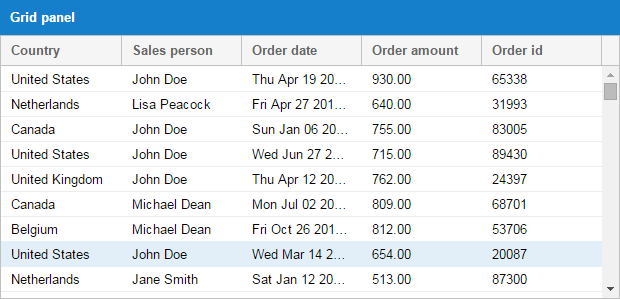
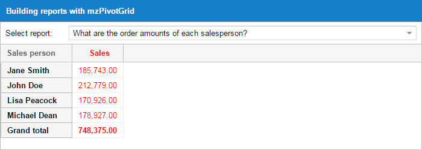
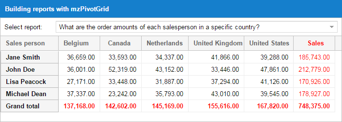
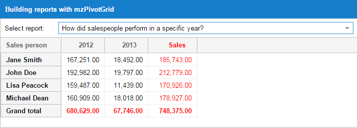
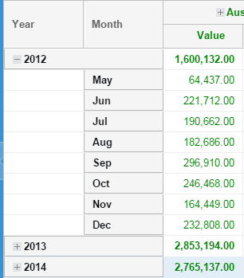
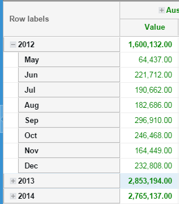
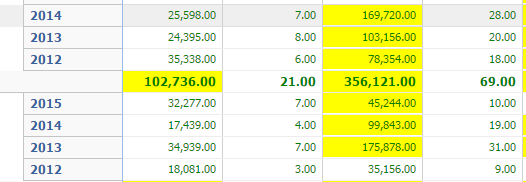

The Pivot Grid component enables rapid summarization of large sets of data. It provides a simple way to condense many data points into a format that makes trends and insights more apparent. A classic example is sales data. A company will often have a record of all sales it makes for a given period. This will often encompass thousands of rows of data. The Pivot Grid allows you to see how well each salesperson performed, which cities generate the most revenue, how products perform between cities, etc.
Note: This guide covers both the stand-alone PivotGrid download used with Ext JS versions prior to 6.x and the PivotGrid package bundled in the Premium version of the Ext JS 6 SDK. This guide assumes you are working with the Ext JS 6 pivot package. The following will need to be substituted throughout the guide when working with the stand-alone download.
- All “Mz” namespaced classes are namespaced with “Ext” in Ext JS 6
- “Mz.aggregate.*” classes are “Ext.pivot.*” in Ext JS 6
- The
Mz.aggregate.matrix.Abstract.grandTotalKeyof ‘_mzgrandtotal_’ isExt.pivot.matrix.Abstract.grandTotalKeyof ‘grandtotal’ in Ext JS 6
Imagine you had the following grid panel:

How could you easily implement a client-side solution that answered the following questions?
What is John Doe’s total order amount?
What are the total order amounts by country?
How did a salespeople perform in a specific year?
These are the sorts of challenges that the Pivot Grid solves. Let’s take a look at how the answers may be visualized.


The Pivot Grid is not bundled within the Ext JS framework, but is easy to require into your application. Whether you’re working with an application generated by Sencha Cmd or with an application structure of your own design, including the Pivot Grid code and styling only requires a couple of steps.
Requirements
Ext JS
Sencha Pivot Grid works with the classic toolkit of Sencha Ext JS 6.
Sencha Cmd
Sencha Cmd is not required to utilize the Pivot Grid. However, using Cmd allows you to seamlessly include the Pivot Grid package via your application’s app.json file.
Installation
Using the Pivot Grid with Sencha Cmd
The Pivot Grid is delivered with full source code that is packaged in a way that makes it easy to deploy to your application’s packages folder.
To include the Pivot Grid in an application that uses the classic toolkit then simply modify your app.json file in your application root directory to require the Pivot Grid package:
{
"name": "YourApp",
"requires": [
"pivot"
],
"id": "391a5ff6-2fd8-4e10-84d3-9114e1980e2d"
}In case of an universal application then simply modify the classic key of app.json:
{
"name": "YourApp",
"classic": {
"js": [
{
// Remove this entry to individually load sources from the framework.
"path": "${framework.dir}/build/ext-all-rtl-debug.js"
}
],
"requires": [
"pivot"
]
},
"id": "391a5ff6-2fd8-4e10-84d3-9114e1980e2d"
}Using the Pivot Grid without Sencha Cmd
The SDK contains a compiled version of the Pivot Grid’s code that is available for those not using Sencha Cmd. To include the Pivot Grid in this manner, link the following assets from your index page:
{unzippedFolder}/packages/pivot/build/pivot.js
{unzippedFolder}/packages/pivot/build/{themeName}/resources/pivot-all.cssInclude the following in your application directory:
{unzippedFolder}/packages/pivot/build/{themeName}/resources/images/Using Pivot Grid
The Pivot Grid relies on two pieces that extend the native grid panel - Axis and Aggregation. Axis allows you to determine row and column placement while aggregation manages the grouping calculations.
Axis
Let’s delve into the Pivot Grid by imagining the use case we discussed above. First, we’ll break the dataset into salespeople and years. We can do this by configuring the top and left axis:
leftAxis: [{
width: 80,
dataIndex: 'salesperson',
header: 'Salesperson'
}],
topAxis: [{
dataIndex: 'year',
header: 'Year',
direction: 'ASC'
}]This results in a view like this:

Aggregation
Next, we’ll set up the aggregation so the cell values can be appropriately calculated.
The Pivot Grid includes many aggregation methods out of the box.
sum
average
min
max
count
groupSumPercentage - If John sold items in the US and Germany you may want to see what percentage was sold to US from the total sales. The groupSumPercentage method calculates the percentage of the current item sum out of the parent item sum.
groupCountPercentage - This is the same as groupSumPercentage, but uses count instead of sum.
variance
varianceP
stdDev
stdDevP
You may also provide your own aggregation function for customized processing. The following example demonstrates how to aggregate multiple fields (sales and quantity) by configuring each aggregator in the aggregate array. As you can see, we’re using a custom aggregator for Quantity.
aggregate: [{
measure: 'amount',
header: 'Sales',
aggregator: 'sum',
align: 'right',
width: 85,
renderer: Ext.util.Format.numberRenderer('0,000.00')
}, {
measure: 'orderid',
header: 'Qnt',
aggregator: function(records, measure, matrix, rowGroupKey, colGroupKey) {
// custom aggregator logic
return records.length;
},
align: 'right',
width: 85,
renderer: Ext.util.Format.numberRenderer('0,000.00')
}]The above is a simple example to show what’s possible. If you are writing your own aggregation methods, it’s best to override Ext.pivot.Aggregators. In the override you can add your functions and use the function name as the aggregator config name.
Ext.define('Overrides.pivot.Aggregators', {
override: 'Ext.pivot.Aggregators',
myOwnFn: function(records) {
// custom aggregator logic
return records.length;
}
});
// Then you can define your aggregate config in this manner
aggregate: [{
// ...
measure: 'field',
aggregator: 'myOwnFn'
// ...
}]Functionality
Sorting Results
When defining a dimension, you can set the following configs to affect sorting results.
sortable: True to sort the results (_default is true_).
direction: You may specify whether you want the results to be sorted (ascending) ASC or (descending) DESC (_default is ASC_).
caseSensitiveSort: Configure as true to make the filtering match with exact case matching (_default is true_).
sorterFn: Custom sorter function.
sortIndex: You may want to sort your results using the value of another field on the record. Let’s say you have one field “month-name” with values like Jan, Feb, etc. and another field “month-value” with values like 1, 2, etc. It makes sense to have the results from “month-name” (dataIndex) and sort by “month-value” (sortIndex).
Multiple Grand Totals
By default, the Pivot Grid calculates grand totals on rows. You may choose whether or not to display the grand total. Adding multiple grand totals on rows is possible in two ways:
You can listen to the
pivotbuildtotalsevent, which is fired by the Pivot Grid. The event handler is passed as a parameter, which contains an array of grand total values and the default value. Each object in that array should have a “title” and a “values” array that will be used to generate the totals record.You can extend one of the matrix classes and use the template method
onBuildTotalsto perform the same logic as above.
The new grand totals that you provide will be styled as the default grand total in the Pivot Grid.
// ...
listeners: {
pivotbuildtotals: function(matrix, totals) {
var dataAvg = {},
dataMax = {};
Ext.Array.each(matrix.model, function(field) {
var result,
agg;
if (field.col && field.agg) {
agg = matrix.aggregate.getByKey(field.agg);
result = matrix.results.get(matrix.grandTotalKey, field.col);
if (result && agg) {
dataAvg[field.name] = result.calculateByFn(
'totalavg',
agg.dataIndex,
Ext.pivot.Aggregators.avg);
dataMax[field.name] = result.calculateByFn(
'totalmax',
agg.dataIndex,
Ext.pivot.Aggregators.max);
}
}
});
totals.push({
title: 'Grand total (avg)',
values: dataAvg
}, {
title: 'Grand total (max)',
values: dataMax
});
}
}
// ...Range Grouping
Let’s say that you have results for years on one axis and you want to group them as 80‘, 90’, and so on. You can achieve this in two ways:
You can define a “grouperFn” on the dimension that will will be passed the record and should return the group value (i.e. 80‘, 90’ etc).
You can define a new field on the source model that has a “convert” function and does the same thing as above.
grouperFn example:
leftAxis: [{
// ...
grouperFn: function(record) {
var dataIndex = this.dataIndex,
recIndex = record.get(dataIndex);
if (recIndex >= 1980 && recIndex < 1990) return "80'";
if (recIndex >= 1990 && recIndex < 2000) return "90'";
return 'Rest';
}
// ...
}]Filtering
The Pivot Grid provides two types of filters:
Label filter
The label filter allows you to filter results by evaluating the values generated for top or left axis results (i.e. begins with, does not begin with, ends with, etc.).
Value filter
The value filter allows you to filter results by evaluating the values calculated for each top/left axis pair (i.e. equals to, greater than, top 10 items, top 10 percent, top 10 sum, etc.).
The filter is configured on a dimension item of the left or top axis.
leftAxis: [{
// ...
filter: {
type: 'value',
operator: 'top10',
topOrder: 'top',
topType: 'sum',
value: 9500,
dimensionId: 'agg2'
}
// ...
}]For more information check out the filter classes (Ext.pivot.filter.*).
Buffered Rendering
There may be thousands of records in the Pivot store once the Pivot Grid’s calculations have completed. To prevent the DOM from being overwhelmed, you may want to use the BufferedRenderer plugin. BufferedRenderer has been available since version Ext JS 4.2.0. In version 5+ BufferedRendering is used on the grid panel by default.
The BufferedRenderer allows users to scroll through thousand of records without the performance penalties of rendering all of the records on screen at once.
Appearance
Layout
Pivot Grid provides two layout types with the viewLayoutType config: outline and compact.
outline

compact

Totals Positioning
The position of the grand totals can be configured for both the left and top axis. The total can be set as first, last, or none.
The group totals will always be visible when the group is collapsed. This occurs regardless of what is configured for the totals when you have multiple dimensions configured on one axis. The same configuration will also be used when the group is expanded.
Renderer
Renderers can be used to style the cell or to format the output value. To style a cell you should define the renderer function on the aggregate dimension. For example:
// ...
aggregator: 'sum',
renderer: function(value, meta, record) {
if (value > 40000) {
meta.style = "background-color: yellow;";
}
return Ext.util.Format.number(value, '0,000.00');
}
// ...Using the above renderer, the resulting grid output would appear as:

You can also define more complex logic in the renderer function. For instance, the below renderer styles the cell differently when the sum is lower than the average of some other field on the model.
// ...
aggregator: 'sum',
renderer: function(value, meta, record, recordIndex, columnIndex, store, view) {
var grid = view.up('pivotgrid'),
topItem = grid.getTopAxisItem(meta.column),
leftItem = grid.getLeftAxisItem(record),
result;
if (topItem && leftItem) {
result = grid.getMatrix().results.get(leftItem.key, topItem.key);
// if you already have the avg configured on another
// dimension just fetch the result
// result.getValue('avg')
// otherwise calculate the result
result.calculateByFn('avg', 'some-other-field', Ext.pivot.Aggregators.avg);
if (value < result.getValue('avg')) {
meta.style = "background-color: yellow;";
}
}
return Ext.util.Format.number(value, '0,000.00');
}
// ...Stateful
Pivot Grids may be configured as stateful by using stateful: true along with a stateId. The state will save all dimension configs that you provided for the left, top, and aggregate. It will additionally recall the state of expanded or collapsed groups.
Locked Grids
You can “lock” left axis columns by setting enableLocking: true on the Pivot Grid.
This allows you scroll just the top axis generated columns.
Plugins
Range editor
This plugin allows users to edit Pivot Grid results. Users can double click a Pivot Grid cell which opens a window that contains various fields to update. The following types of edits are available:
percentage: The provided value is a percentage that should be used to increase the values on all records behind that cell.
increment: The provided value will be added to the existing value on each record.
overwrite: The provided value will replace the existing value on each record.
uniformly: The provided value will be distributed uniformly on all records.
The plugin also provides two template methods that you can use to pre / post process the edit: onBeforeRecordsUpdate and onAfterRecordsUpdate.
Drill down
The drill down plugin allows the user to drill down into Pivot Grid results. Users can double click a Pivot Grid cell which opens a dialog window housing a grid containing records sourced by the cell.
The grid presented in that drill down window may be customized by configuring the columns config on the plugin in the same way as a normal Ext JS grid.
Exporter
The Exporter plugin allows Pivot Grid results export to any Exporter type available in the class system. The plugin uses the exporter package which comes out of the box with an Excel XML Exporter.
The plugin adds two new methods to the Pivot Grid component:
saveDocumentAs: If browser supports it then this function will save the exported file
getDocumentData: Returns the export document content
Both functions accept a config object as parameter:
type: This is the exporter type (_defaults to excel).
onlyExpandedNodes: Set to true to export only the expanded groups (_defaults to false_).
showSummary: Set to false to exclude the totals from the export (_defaults to true_).
title: Set a title to be shown above column headers in the exported document.
fileName: Name of the saved file.
Each Exporter may come with its own set of additional configs. Those can be provided to the above config object when one of those functions is called.
If saveDocumentAs doesn’t work in your browser then it’s preferable to send the XML data to the server and have the server respond back with the proper headers for a downloadable file.
You can provide a function in your Pivot Grid extension like this:
// ...
onExport: function() {
var me = this,
form = Ext.DomHelper.createDom({
tag: 'form',
action: 'url', // this is a URL on your server that receives the xml content
method: 'POST',
children: [{
tag: 'input',
type: 'hidden',
name: 'filename',
value: me.title
}, {
tag: 'input',
type: 'hidden',
name: 'content',
value: encodeURIComponent(me.getDocumentData( {type: 'excel'} ))
}]
});
form.submit();
}
// …Using a PHP script on your server side, you could do something along these lines:
// ...
$fileName = $_POST['filename'].'.xml';
$fileContent = urldecode($_POST['content']);
header('Content-Length: '.strlen($fileContent));
header("Content-Type: application/vnd.ms-excel; charset=utf-8");
header("Content-Disposition: attachment; filename=\"$fileName\"");
header("Expires: 0");
header("Cache-Control: must-revalidate, post-check=0, pre-check=0");
header("Cache-Control: private", false);
echo $fileContent;
// ...Configurator
The configurator plugin allows the user to easily configure a Pivot Grid with drag and drop functionality.
Following configs are available on the plugin:
dock: The configurator panel is dockable to top, right, bottom and left of the pivot grid (_defaults to right).
collapsible: Is this configurator panel collapsible (_defaults to true)?
fields: An array of available fields to drag and drop on dimensions. The plugin will automatically extract all fields from the store model when using a Local matrix if the fields config is empty.
If you have custom fields, you’ll need to configure each field with:
dataIndex: The field name on the model that provides the field value
header: The field title displayed in the view
any other dimension item config
Matrix Class
Events
Most events fired by matrix classes are relayed to the Pivot Grid along with a pivot prefix.
Base matrix
The Base matrix class builds the top and left axis items. It also calculates the result for each left / top item pair.
Local matrix
Setting your matrix type to local indicates that the browser will be responsible for calculating data. The Local matrix is ideal for small to medium-sized data sets.
Ext.create('Ext.pivot.Grid', {
// ...
matrixConfig: {
type: 'local', // default value
store: 'YourStore',
recordsPerJob: 1000,
timeBetweenJobs: 2
}
// ...
});The Local matrix processes store records in multiple jobs to help prevent overloading the browser when working with medium-sized data sets. You can optionally configure how many records should be processed per job and how long to wait between jobs.
Remote matrix
Calculating large data sets in the browser can take a lot of time and may cause the browser to become unresponsive. If you are working with large data sets, you should use the Remote matrix. The Remote matrix will serialize all of your configs and send them to the server so that you may perform your calculations remotely.
Ext.create('Ext.pivot.Grid', {
// ...
matrixConfig: {
type: 'remote',
url: 'http://your-backend-url',
timeout: 3000 // optional config used by the Ajax call
}
// ...
});FAQ
What is sent to the server?
The leftAxis, topAxis, and aggregate are arrays of dimension item objects. These arrays are serialized and sent as params in the Ajax request.
params = {
leftAxis: leftAxis,
topAxis: topAxis,
aggregate: aggregate,
grandTotalKey: 'grandtotal', // the value configured for grandTotalKey on the matrix
keysSeparator: '#_#' // the value configured for keysSeparator on the matrix
};
// ...
Ext.Ajax.request({
// ...
url: me.url,
timeout: me.timeout,
jsonData: params,
// ...
});Before doing the Ajax call, additional params are collected via the beforerequest event (which is actually relayed to the Pivot Grid as pivotbeforerequest) or via the template method onBeforeRequest.
What should the JSON response look like?
The Pivot Grid expects a JSON response in a specific format. The response should return an array of items for the leftAxis and topAxis and all results for the left / top item pairs.
Note: The “id” property is very important. An id will be generated if not specified.
{
success: true,
leftAxis: [{
key: '-1276511163', // provide your own key but be careful to avoid conflicts with keysSeparator
value: 'Macromedia',
// following is the id of the dimension, the one that you
// provided or was generated
dimensionId: 'leftAxis1'
}, {
// when multiple dimensions are provided then the result key
// should be formatted like this
key: '-1276511163#_#243243', // use the keysSeparator that was sent to the server
value: 'Steve',
// following is the id of the dimension, the one that you
// provided or was generated
dimensionId: 'leftAxis2'
}],
topAxis: [{
// same like leftAxis
}],
results: [{
leftKey: '-1276511163',
topKey: '34535345435',
values: {
agg1: 4345.34, // agg1 is the id of the aggregate dimension
agg2: 244 // agg2 is the id of the 2nd aggregate dimension defined
}
}]
}A key called “grandtotal” is generated for the matrix in regards to grand total calculations. You can modify this naming scheme by changing the value of matrix.grandTotalKey.
If used on both leftKey and topKey, it represents the grand total for both axis.
If used for leftKey, it represents the grand total for columns for each topKey provided.
If used for topKey, it represents the grand total for rows for each leftKey provided.
How do I calculate on the server?
The examples folder contains a PHP example that shows one approach to server side calculations. That said, you can also author your own implementation in any server-side language as long as it returns the JSON object described above.
Error Handling
If server calculations fail, you can send back success: false along with any additional metadata information you may wish to process in the Pivot client. The Remote matrix class will recognize that the call failed and will fire the “requestexception” event, which is relayed to the Pivot Grid as “pivotrequestexception”.
Conclusion
The Sencha Pivot Grid provides an ideal solution for gleaning summarization from large datasets. Specific fields from the dataset can be highlighted as quantitative roll-ups of the complete dataset, which allows users to visualize the dataset from multiple viewpoints.
For more examples of how to configure the Pivot Grid see the examples folder in the SDK download.